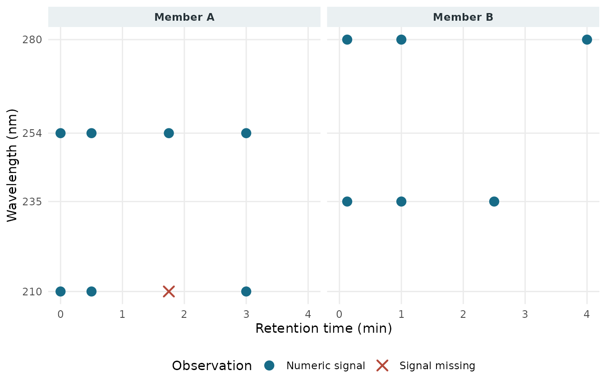
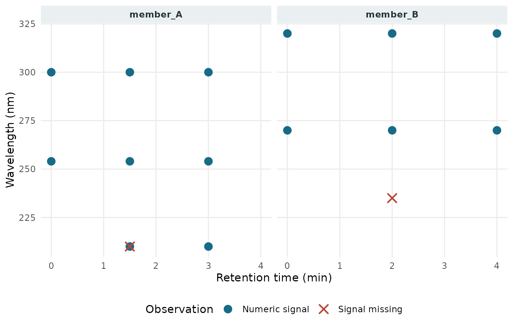
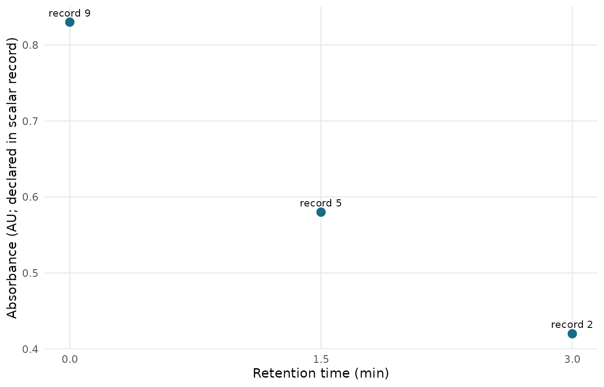

Working with multidimensional measurements
Source:vignettes/multidimensional-measurements.Rmd
multidimensional-measurements.RmdPaired DAD data on different grids
An nD payload can store signal observations against retention time and wavelength. These synthetic teaching measurements use different coordinate grids and point counts. Their dimension names and units are shared declarations; the coordinates remain specific to each member.
dad_a <- new_measure_nd_tbl(
location_1 = c(1.75, 0, 3, 0.5, 0, 3, 0.5, 1.75),
location_2 = c(254, 210, 254, 210, 254, 210, 254, 210),
value = c(1.25, 0.125, 0.375, 0.625, 0.25, 0.5, 0.875, NA_real_),
dim_names = c("retention_time", "wavelength"),
dim_units = c("min", "nm")
)
dad_b <- new_measure_nd_tbl(
location_1 = c(1, 0.125, 4, 2.5, 0.125, 1),
location_2 = c(280, 235, 280, 235, 280, 235),
value = c(12.5, 10, 14.5, 11.25, 10.25, 11.5),
dim_names = c("retention_time", "wavelength"),
dim_units = c("min", "nm")
)
dad_pair <- new_measure_nd_list(list(dad_a, dad_b))
c(nrow(dad_pair[[1]]), nrow(dad_pair[[2]]))
#> [1] 8 6The points below are the recorded coordinate pairs. Member A contains all eight pairings of its four sampled retention times and two wavelengths; one signal is missing. Member B contains six of the eight pairings from its own four retention times and two wavelengths. The chart adds no coordinate pairs.
dad_plot_data <- dplyr::bind_rows(lapply(seq_along(dad_pair), function(i) {
member <- dad_pair[[i]]
data.frame(
member = c("Member A", "Member B")[[i]],
retention_time = member$location_1,
wavelength = member$location_2,
signal = member$value,
observation = ifelse(
is.na(member$value),
"Signal missing",
"Numeric signal"
)
)
}))
ggplot2::ggplot(
dad_plot_data,
ggplot2::aes(
x = retention_time,
y = wavelength,
colour = observation,
shape = observation
)
) +
ggplot2::geom_point(size = 3.2, stroke = 1.1) +
ggplot2::facet_wrap(~member, ncol = 2) +
ggplot2::scale_colour_manual(
name = "Observation",
values = c(
"Numeric signal" = "#176B87",
"Signal missing" = "#B4493A"
)
) +
ggplot2::scale_shape_manual(
name = "Observation",
values = c("Numeric signal" = 16, "Signal missing" = 4)
) +
ggplot2::scale_x_continuous(
breaks = c(0, 1, 2, 3, 4),
minor_breaks = NULL
) +
ggplot2::scale_y_continuous(
breaks = sort(unique(dad_plot_data$wavelength)),
minor_breaks = NULL
) +
ggplot2::labs(
x = "Retention time (min)",
y = "Wavelength (nm)"
) +
guide_plot_theme
Recorded coordinate pairs from two synthetic teaching members. Member A has all eight combinations of four retention times and two wavelengths; member B has six of eight combinations. Circle and cross shapes distinguish numeric and missing signals.
The pair can share an nD list while preserving each member’s grid and metadata. The list does not assert that the two measurements have identical coordinates.
Compare signals at sampled coordinates
Suppose two injections were sampled at different time and wavelength
pairs. Use pad = TRUE when the next step needs the same
coordinate rows for both injections. Here the two injections cover three
distinct pairs between them. Each padded trace has three rows. The
absent readings are NA.
observations <- tibble(
injection = c("A", "A", "B", "B"),
time = c(1, 2, 2, 3),
wavelength = c(210L, 254L, 254L, 280L),
absorbance = c(0.12, 0.40, 0.55, 0.18)
)
paired <- recipes::recipe(~ ., data = observations) |>
recipes::update_role(injection, new_role = "id") |>
step_measure_input_long(
absorbance, location = dplyr::vars(time, wavelength), pad = TRUE,
dim_names = c("time", "wavelength"), dim_units = c("min", "nm")
) |>
recipes::prep() |>
recipes::bake(new_data = NULL)
measure_slice_table(paired) |>
dplyr::select(injection, time_min = location_1, wavelength_nm = location_2,
absorbance = value)
#> # A tibble: 6 × 4
#> injection time_min wavelength_nm absorbance
#> <chr> <dbl> <int> <dbl>
#> 1 A 1 210 0.12
#> 2 A 2 254 0.4
#> 3 A 3 280 NA
#> 4 B 1 210 NA
#> 5 B 2 254 0.55
#> 6 B 3 280 0.18Both injections have a recorded signal at 2 minutes and 254 nm. Padding leaves the other time and wavelength combinations outside the comparison. Keep the original observations when you need to distinguish an absent row from a recorded row whose signal was already missing.
Preserve sparse coordinates and point order
The next paired example keeps the input point order. Retention-time groups appear in descending order, and wavelengths within each time group are also listed in descending order. The members have different sparse grids, and one coordinate tuple is repeated. Missing signal values remain missing observations; they are not replaced with zero. The member names below are labels only. They do not supply sample or injection identifiers. These are synthetic teaching observations, not an instrument recording.
raw_dad_a <- new_measure_nd_tbl(
location_1 = c(3, 3, 3, 1.5, 1.5, 1.5, 1.5, 0, 0),
location_2 = c(300L, 254L, 210L, 300L, 254L, 210L, 210L, 300L, 254L),
value = c(-0.0, 0.42, 0.61, 0.15, 0.58, 0.72, NA_real_, 0.18, 0.83),
dim_names = c("retention_time", "wavelength"),
dim_units = c("min", "nm")
)
raw_dad_b <- new_measure_nd_tbl(
location_1 = c(4, 4, 2, 2, 2, 0, 0),
location_2 = c(320L, 270L, 320L, 270L, 235L, 320L, 270L),
value = c(1.4, 1.1, 1.8, 1.2, NA_real_, 2.2, 1.5),
dim_names = c("retention_time", "wavelength"),
dim_units = c("min", "nm")
)
raw_dad_pair <- new_measure_nd_list(
list(member_A = raw_dad_a, member_B = raw_dad_b)
)
column_types <- function(x) {
vapply(
x[c("location_1", "location_2", "value")],
typeof,
character(1)
)
}
finite_binary64_bytes <- function(x) {
stopifnot(typeof(x) == "double")
connection <- rawConnection(raw(), open = "wb")
on.exit(close(connection), add = TRUE)
writeBin(
x[is.finite(x)],
connection,
size = 8L,
endian = "little"
)
rawConnectionValue(connection)
}
expected_column_types <- c(
location_1 = "double",
location_2 = "integer",
value = "double"
)
stopifnot(
identical(nrow(raw_dad_a), 9L),
identical(nrow(raw_dad_b), 7L),
identical(
sort(unique(raw_dad_a$location_1), decreasing = TRUE),
c(3, 1.5, 0)
),
identical(
sort(unique(raw_dad_a$location_2), decreasing = TRUE),
c(300L, 254L, 210L)
),
identical(sort(unique(raw_dad_b$location_1), decreasing = TRUE), c(4, 2, 0)),
identical(
sort(unique(raw_dad_b$location_2), decreasing = TRUE),
c(320L, 270L, 235L)
)
)
guide_temp_dir <- tempfile("measure-dad-guide-")
dir.create(guide_temp_dir)
tryCatch(
{
raw_bundle <- file.path(guide_temp_dir, "raw-dad-native")
write_measure_nd(raw_dad_pair, path = raw_bundle, delim = ",")
restored_raw_dad <- read_measure_nd(
raw_bundle,
max_bytes = 10 * 1024^2
)
stopifnot(
identical(restored_raw_dad, raw_dad_pair),
identical(names(restored_raw_dad), c("member_A", "member_B")),
identical(restored_raw_dad[[1]]$location_1, raw_dad_a$location_1),
identical(restored_raw_dad[[1]]$location_2, raw_dad_a$location_2),
identical(restored_raw_dad[[1]]$value, raw_dad_a$value),
identical(
measure_dim_names(restored_raw_dad[[1]]),
c("retention_time", "wavelength")
),
identical(measure_dim_units(restored_raw_dad[[1]]), c("min", "nm")),
identical(column_types(raw_dad_a), expected_column_types),
identical(column_types(raw_dad_b), expected_column_types),
identical(column_types(restored_raw_dad[[1]]), expected_column_types),
identical(column_types(restored_raw_dad[[2]]), expected_column_types),
identical(
finite_binary64_bytes(raw_dad_a$location_1),
finite_binary64_bytes(restored_raw_dad[[1]]$location_1)
),
identical(
finite_binary64_bytes(raw_dad_a$value),
finite_binary64_bytes(restored_raw_dad[[1]]$value)
),
identical(
finite_binary64_bytes(raw_dad_b$location_1),
finite_binary64_bytes(restored_raw_dad[[2]]$location_1)
),
identical(
finite_binary64_bytes(raw_dad_b$value),
finite_binary64_bytes(restored_raw_dad[[2]]$value)
),
identical(
finite_binary64_bytes(raw_dad_a$value[1]),
as.raw(c(0L, 0L, 0L, 0L, 0L, 0L, 0L, 128L))
),
identical(
finite_binary64_bytes(restored_raw_dad[[1]]$value[1]),
as.raw(c(0L, 0L, 0L, 0L, 0L, 0L, 0L, 128L))
)
)
# The empty list retains its validated 3D prototype through native I/O.
empty_3d <- new_measure_nd_tbl(
location_1 = integer(),
location_2 = double(),
location_3 = integer(),
value = integer(),
dim_names = c("retention_time", "wavelength", "scan"),
dim_units = c("min", "nm", NA_character_)
)
empty_3d_list <- new_measure_nd_list(list(empty_3d))[0]
empty_3d_bundle <- file.path(guide_temp_dir, "empty-3d-native")
write_measure_nd(empty_3d_list, path = empty_3d_bundle)
restored_empty_3d <- read_measure_nd(empty_3d_bundle)
empty_3d_grid <- measure_grid_info(restored_empty_3d)
stopifnot(
identical(restored_empty_3d, empty_3d_list),
identical(measure_ndim(restored_empty_3d), 3L),
identical(empty_3d_grid$ndim, 3L),
identical(empty_3d_grid$n_samples, 0L),
identical(empty_3d_grid$sample_info, list())
)
# Extract only after the raw bundle has been reloaded and checked.
selected_wavelength <- 254L
restored_member_a <- restored_raw_dad[[1]]
selected_original_point_indices <- which(
restored_member_a$location_2 == selected_wavelength
)
raw_trace_254 <- measure_slice(
restored_member_a,
wavelength = selected_wavelength,
drop = TRUE
)
stopifnot(
identical(
raw_trace_254$location,
restored_member_a$location_1[selected_original_point_indices]
),
identical(
raw_trace_254$value,
restored_member_a$value[selected_original_point_indices]
),
identical(raw_trace_254$location, c(3, 1.5, 0)),
identical(raw_trace_254$value, c(0.42, 0.58, 0.83))
)
raw_points_file <- file.path(raw_bundle, "points.csv")
raw_points <- utils::read.csv(
raw_points_file,
colClasses = "character",
check.names = FALSE,
stringsAsFactors = FALSE
)
raw_points$member_index <- as.integer(raw_points$member_index)
raw_points$point_index <- as.integer(raw_points$point_index)
point_lookup <- tibble::tibble(
member_index = raw_points$member_index,
point_index = raw_points$point_index,
source_record_ordinal = seq_len(nrow(raw_points))
)
point_mapping <- dplyr::left_join(
tibble::tibble(
member_index = 1L,
point_index = as.integer(selected_original_point_indices)
),
point_lookup,
by = c("member_index", "point_index")
)
stopifnot(
nrow(point_mapping) == length(selected_original_point_indices),
!anyNA(point_mapping$source_record_ordinal),
!anyDuplicated(point_mapping$source_record_ordinal),
identical(
point_mapping$point_index,
as.integer(selected_original_point_indices)
)
)
trace_order <- order(raw_trace_254$location)
record_trace <- new_measure_tbl(
location = raw_trace_254$location[trace_order],
value = raw_trace_254$value[trace_order]
)
source_rows_for_record <- as.integer(
point_mapping$source_record_ordinal[
match(trace_order, seq_len(nrow(point_mapping)))
]
)
stopifnot(identical(
source_rows_for_record,
as.integer(point_mapping$source_record_ordinal[trace_order])
))
raw_points_bytes <- readBin(
raw_points_file,
what = "raw",
n = file.info(raw_points_file)$size
)
raw_points_sha256 <- digest::digest(
raw_points_bytes,
algo = "sha256",
serialize = FALSE
)
raw_points_file_name <- basename(raw_points_file)
},
finally = unlink(guide_temp_dir, recursive = TRUE)
)The native measure-nd v1 bundle preserves this supported
numerical payload, including point order, the members’ different grids,
repeated tuples, missing values, and dimension names and units. It does
not expand the sparse data into a rectangular grid or interpret the
observations as a physical acquisition. The guide deletes its temporary
files after rendering; retain the native bundle when later analysis
requires the raw points.
The plot keeps all 16 raw coordinate pairs. The cross and circle at the same member A coordinate mark two distinct observations: one numeric signal and one missing signal.
raw_dad_plot_data <- dplyr::bind_rows(lapply(
seq_along(restored_raw_dad),
function(i) {
member <- restored_raw_dad[[i]]
data.frame(
member = names(restored_raw_dad)[[i]],
retention_time = member$location_1,
wavelength = member$location_2,
signal = member$value,
observation = ifelse(
is.na(member$value),
"Signal missing",
"Numeric signal"
)
)
}
))
ggplot2::ggplot(
raw_dad_plot_data,
ggplot2::aes(
x = retention_time,
y = wavelength,
colour = observation,
shape = observation
)
) +
ggplot2::geom_point(size = 3.2, stroke = 1.1) +
ggplot2::facet_wrap(~member, ncol = 2) +
ggplot2::scale_colour_manual(
name = "Observation",
values = c(
"Numeric signal" = "#176B87",
"Signal missing" = "#B4493A"
)
) +
ggplot2::scale_shape_manual(
name = "Observation",
values = c("Numeric signal" = 16, "Signal missing" = 4)
) +
ggplot2::labs(
x = "Retention time (min)",
y = "Wavelength (nm)"
) +
guide_plot_theme
Raw coordinate pairs after reloading the native nD bundle. The overlapping circle and cross in member A mark two records at the same coordinate: one numeric signal and one missing signal.
Map an extracted trace to parsed raw points
The 254 nm slice preserves member A’s input order.
point_mapping joins on member_index and
point_index in points.csv, not on coordinates,
so repeated tuples remain distinct. Its source ordinals count parsed CSV
records, not physical text lines.
point_mapping
#> # A tibble: 3 × 3
#> member_index point_index source_record_ordinal
#> <int> <int> <int>
#> 1 1 2 2
#> 2 1 5 5
#> 3 1 9 9
raw_trace_254
#> <measure_tbl [3 x 2]>
#> # A tibble: 3 × 2
#> location value
#> <dbl> <dbl>
#> 1 3 0.42
#> 2 1.5 0.58
#> 3 0 0.83
record_trace
#> <measure_tbl [3 x 2]>
#> # A tibble: 3 × 2
#> location value
#> <dbl> <dbl>
#> 1 0 0.83
#> 2 1.5 0.58
#> 3 3 0.42The scalar record below stores these source ordinals and the SHA-256
of the raw points.csv bytes alongside the trace. Its native
bundle does not embed the nD bundle or raw point file.
Unfold and restore each member
Unfolding creates one 1D payload per nD member and retains that member’s fold metadata. Folding uses the saved coordinate mapping. The result is in canonical coordinate order; it does not restore the acquisition row order from the shuffled input.
unfolded_pair <- measure_unfold(dad_pair, order = c(1, 2))
restored_pair <- measure_fold(unfolded_pair)
canonical_cells <- function(x) {
index <- order(x$location_1, x$location_2)
data.frame(
location_1 = x$location_1[index],
location_2 = x$location_2[index],
value = x$value[index]
)
}
restored_exactly <- vapply(
seq_along(dad_pair),
function(i) {
identical(
canonical_cells(dad_pair[[i]]),
canonical_cells(restored_pair[[i]])
)
},
logical(1)
)
restored_exactly
#> [1] TRUE TRUE
stopifnot(all(restored_exactly))For heterogeneous grids, keep each member’s fold metadata attached.
new_measure_list() rebuilds edited members while retaining
that metadata; direct replacement through a list-column prototype can
drop it. A missing member mapping or invalid point index is an error
because the edited values could no longer be tied safely to
coordinates.
edited_members <- lapply(unfolded_pair, function(member) {
member$value <- 2 * member$value
member
})
edited_pair <- measure_fold(new_measure_list(edited_members))
stopifnot(all(vapply(
seq_along(edited_pair),
function(i) {
identical(edited_pair[[i]]$value, 2 * restored_pair[[i]]$value)
},
logical(1)
)))Slice points and summarize observed values
Use one named dimension selector at a time, or unique dimension numbers, to make the chosen axis clear. A slice preserves the selected point order. A predicate must return one complete logical decision per point.
trace_254 <- measure_slice(
dad_a,
wavelength = 254,
drop = TRUE
)
trace_254
#> <measure_tbl [4 x 2]>
#> # A tibble: 4 × 2
#> location value
#> <dbl> <dbl>
#> 1 1.75 1.25
#> 2 3 0.375
#> 3 0 0.25
#> 4 0.5 0.875
time_window <- measure_slice(
dad_a,
retention_time = function(time) time >= 0.25 & time <= 2,
drop = FALSE
)
time_window
#> <measure_nd_tbl [4 x 3] retention_time x wavelength>
#> <measure_tbl [4 x 3]>
#> # A tibble: 4 × 3
#> location_1 location_2 value
#> <dbl> <dbl> <dbl>
#> 1 1.75 254 1.25
#> 2 0.5 210 0.625
#> 3 0.5 254 0.875
#> 4 1.75 210 NAProjection groups points by the dimensions it keeps and applies the requested summary to observed values in each group. The next table compares two summaries across the wavelength points recorded at each retention time.
total_by_time <- measure_project(
dad_a,
along = 2L,
fn = sum,
na_rm = TRUE
)
mean_by_time <- measure_project(
dad_a,
along = 2L,
fn = mean,
na_rm = TRUE
)
stopifnot(
identical(total_by_time$location, c(0, 0.5, 1.75, 3)),
identical(total_by_time$value, c(0.375, 1.5, 1.25, 0.875)),
identical(mean_by_time$value, c(0.1875, 0.75, 1.25, 0.4375))
)
tibble(
retention_time = total_by_time$location,
sum_of_observed_values = total_by_time$value,
mean_of_observed_values = mean_by_time$value
)
#> # A tibble: 4 × 3
#> retention_time sum_of_observed_values mean_of_observed_values
#> <dbl> <dbl> <dbl>
#> 1 0 0.375 0.188
#> 2 0.5 1.5 0.75
#> 3 1.75 1.25 1.25
#> 4 3 0.875 0.438These are pointwise summaries. A sum does not integrate absorbance over wavelength: it does not account for wavelength spacing or interpolate missing bands. A mean and a sum answer different questions, and either can be affected by how many wavelengths were measured. Choose a domain method before comparing measurements whose grids differ.
Make a scalar record from an extracted trace
The current measure_record schema stores one-dimensional
curves. The record uses the 254 nm trace extracted from the restored raw
nD member and orders its retention-time points for the record’s
monotonic-axis requirement. For this tutorial curve, the caller declares
sample-001 and injection-001; neither
identifier is inferred from the nD member label. The retention-time unit
(min), selected wavelength (254 nm), and
scalar response unit (AU) are also declared.
record <- measure_record(
samples = tibble(sample_id = "sample-001"),
injections = tibble(
injection_id = "injection-001",
sample_id = "sample-001"
),
channels = tibble(
channel_id = "dad-254",
channel_name = "DAD trace selected at 254 nm"
),
curves = tibble(
curve_id = "curve-001",
injection_id = "injection-001",
channel_id = "dad-254",
source_id = "raw-dad-points",
axis_name = "retention time",
axis_unit = "min",
value_name = "absorbance",
value_unit = "AU",
.measures = list(record_trace),
.source_rows = list(source_rows_for_record)
),
sources = tibble(
source_id = "raw-dad-points",
source_name = raw_points_file_name,
source_sha256 = raw_points_sha256
)
)
validate_measure_record(record)
record$curves$.measures[[1]]
#> <measure_tbl [3 x 2]>
#> # A tibble: 3 × 2
#> location value
#> <dbl> <dbl>
#> 1 0 0.83
#> 2 1.5 0.58
#> 3 3 0.42
record$curves$.source_rows[[1]]
#> [1] 9 5 2The scalar curve is ordered by retention time, while its labels
retain the parsed points.csv record ordinals. These
references show which raw point supplied each selected 254 nm value.
record_trace_plot_data <- data.frame(
retention_time = record$curves$.measures[[1L]]$location,
absorbance = record$curves$.measures[[1L]]$value,
source_record = record$curves$.source_rows[[1L]]
)
ggplot2::ggplot(
record_trace_plot_data,
ggplot2::aes(x = retention_time, y = absorbance)
) +
ggplot2::geom_point(colour = "#176B87", size = 3) +
ggplot2::geom_text(
ggplot2::aes(label = paste0("record ", source_record)),
vjust = -0.8,
size = 3
) +
ggplot2::scale_x_continuous(breaks = record_trace_plot_data$retention_time) +
ggplot2::labs(
x = "Retention time (min)",
y = "Absorbance (AU; declared in scalar record)"
) +
guide_plot_theme
The scalar record’s extracted 254 nm trace, with each point labeled by its parsed raw points.csv record ordinal.
The record contains this extracted 1D trace, not dad_a,
dad_pair, or the raw nD payload. The caller supplies the
source hash and parsed-record ordinals; the scalar bundle stores these
references without embedding the raw points file or nD bundle.
record_bundle <- tempfile("measure-dad-record-")
tryCatch(
{
write_measure_record(record, record_bundle)
saved_record <- read_measure_record(record_bundle)
stopifnot(identical(record, saved_record))
nrow(saved_record$curves$.measures[[1]])
},
finally = unlink(record_bundle, recursive = TRUE)
)
#> [1] 3Storage and provenance limits
| Capability | Boundary |
|---|---|
| Native R nD bundle | The measure-nd v1 profile preserves supported numerical
coordinates, values, dimension labels and units, member order, and
special numerical states. |
| Independent Python reader | The project qualification reader checks this same native profile; it is not a general scientific-file or vendor reader. |
| Vendor, mzML, NPZ, or MS file readers | These formats and their vendor-specific conventions are outside this bundle profile. A numerical coordinate/value table does not provide a validated parser for them. |
| Acquisition and instrument metadata | The current nD class and bundle do not define sample or injection identity, detector identity, acquisition settings, method history, or instrument provenance. Supply needed identifiers and units explicitly in a separate schema. |
The bundle’s hashes detect changes to its payload bytes; they do not establish source authenticity or qualify an instrument, acquisition, or analytical method. A wavelength slice is an observed trace at the selected wavelength. Likewise, a sum or mean over sampled wavelengths is not physical wavelength integration and does not account for spacing or missing bands.